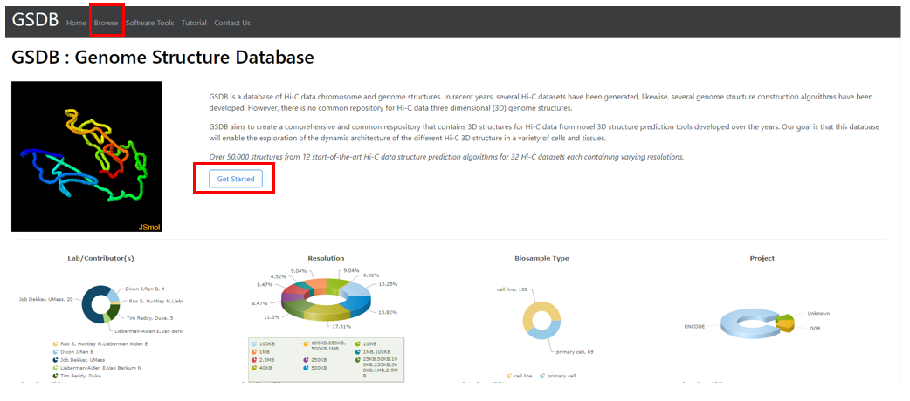
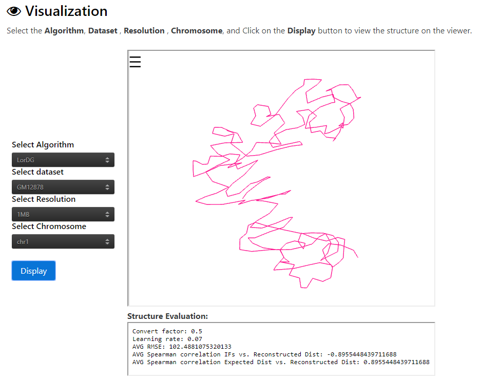
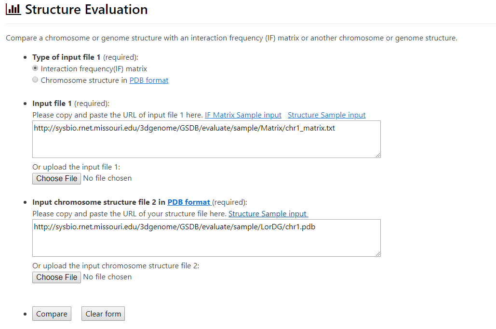

Tutorial
Click on the section title to view the section instructions
- View the Database
- Search the Database
- Visualization of Chromosome 3D Structure
- Download the Chromosome 3D Structure
- Download the Normalized Hi-C Data
- Structure Evaluation
- GSDB Computational requirement and performance
- References
Section 1 : View the Database
Hi-C, high-throughput chromatin conformation capture (3C), is one of the most-widely used genome-wide molecular assay that can identify long-range chromatin interactions. To visualize the structure for a Hi-C data, follow the steps belowClick on Browse Menu in the navigation bar to load the full list of the Hi-C datasets. OR Click on the Get Started button on the homepage. Both are highlighted below

Section 2 : Search the Database
GSDB provides two ways to search the database1) GSDB provides a summary of the information provided in the database through a Summary Pane. By clicking on a property/item in the Summary, the user can search the database for all the Hi-C data containing this property.
- Example
The image below shows the Result when the user clicks on 100KB in the Resolution Summary Pane2) Users can search the database by Typing the keywords about the Filename,Title of Hi-C data, Hi-C data Resolution, Project Hi-C data was generated from,Project ID, and the GEO_Accesion_No in the Search Pane highlighted in red below
- Example
The image below shows the Result of search for 1MB Resolution Hi-C dataSection 3 : Visualization of Chromosome 3D Structure
STEP 1 : Click on the View link in the 3D Structure Column to view the details and structures for a Hi-C data.- Output
The image below shows the Result when a user clicks on the View link for the GM12878 dataset in Row 1 above.STEP 2 : Select the Algorithm, Dataset , Chromosome, and Click on the Display button to view the structure on the viewer.
- Example
The image below shows the result when a user selects Algorithm = LorDG, Dataset = GM12878, Resolution = 1MB, Chromosome = 1.
Section 4 : Download the Chromosome 3D Structure
Click on the Download link in the "3D Structure Column" to download the 3D structures for the different algorithms available for a Hi-C data.- Output
When the user clicks on the Download link a compressed .tar.gz file with the Data file Name will be downloaded.Section 5 : Download the Normalized Hi-C Data
Click on the Download link in the "Normalized Hi-C Data Column" to download the Normalized Hi-C Data used to generate strcutures for the different algorithms.- Output
When the user clicks on the Download link a compressed .tar.gz file with the Data file Name will be downloaded.Section 6 : Structure Evaluation
GSDB provides two ways to evaluate a structure1) Compare chromsosome structure in pdb format with input Interaction Frequency(IF) matrix
To compare with IF matrix, user needs to provide the following inputs:
IF Matrix Format: The data format allowed for the IF matrix is a comma-seperated or a tab-seperated n by n symmetrix matrix. Where n is the number of regions/bins in the IF Matrix
- Example
Click on the Sample Inputs, IF Matrix Sample input for Input file 1 and Structure Sample input to use them for evaluation.
- Result
On clicking the Compare button , the user gets the prompt below about the evaluation result
2) Compare a chromsome structure with another chromsome structure in pdb formatTo compare two structures, user needs to provide the following inputs:
- Example
Click on the Sample Inputs, Structure Sample input for Input file 1 and Structure Sample input to use them for evaluation.- Result
On clicking the Compare button , the user gets the prompt below about the evaluation result
Section 7 : Computational requirement and performance
The GSDB chromosome structure generation was done on two server machines: a x86_64 bit Redhat-Linux server con-sisting of multi-core Intel(R) Xeon(R) CPU E7-L8867 @ 2.13GHz with 120 GB RAM and a high-performance computing cluster (Lewis) with Linux. Using a high-performance computing (HPC) cluster machine, we allocated 10 cores, 80G of memory, with a time limit of 2 days for each chromosome structure reconstruction task per algorithm. No structures are avilable for chromosome Hi-C data that took more than two days to be constructed by an algorithm. Find more details about Lewis Cluster hereSection 8 : References